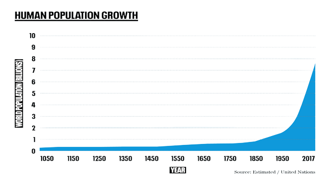
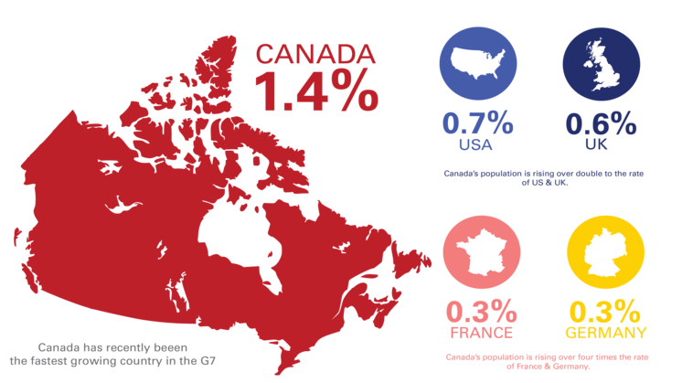
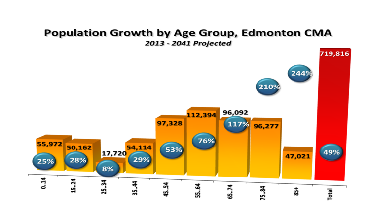

Over the last century, the world has seen rapid population growth. But how are populations distributed across the world? Which countries have the most people? In the map, we see the estimated population of each country today. To see how this has changed since 1800,you can use the ‘play’...

As of 31 December 2021, Portugal had 10,352,042 inhabitants. Portugal is a fairly linguistically and religiously homogeneous country. Ethnically the Portuguese people form 95% of the total population in Portugal. The Portuguese people are mainly a combination of ancient paleolithic populations, and...